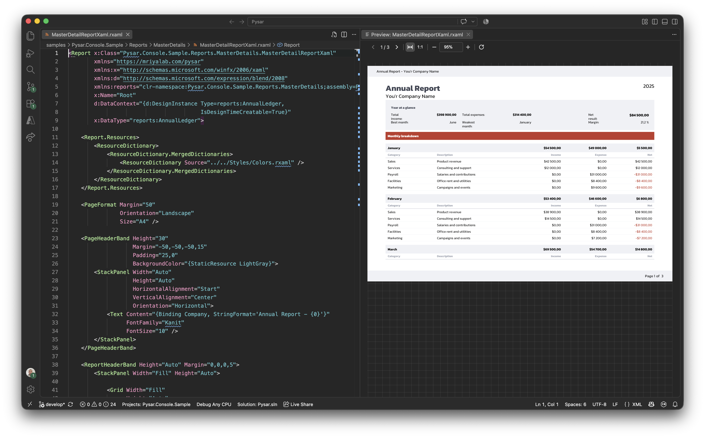
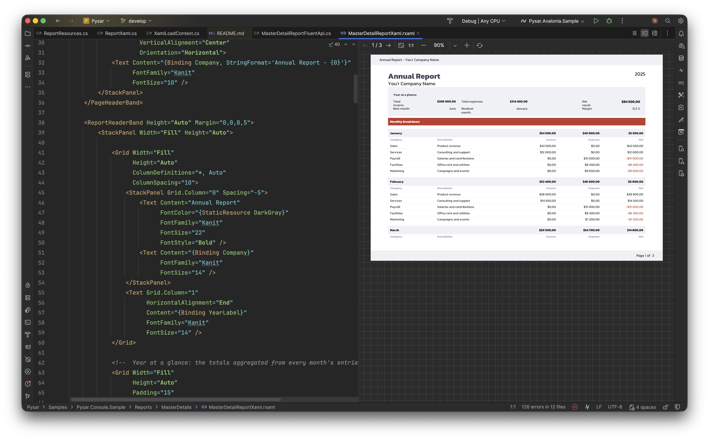
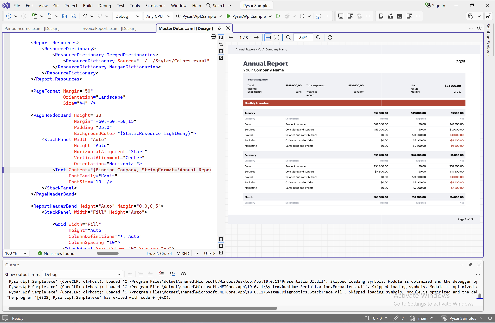

Two plugins. One free, one on the way.
.rxaml syntax highlighting is free today, in every editor we support. A full visual report designer, Pysar.Design, is in development next.
Pysar (syntax highlighting)
Completely free. No trial, no license.
The Pysar plugin colors .rxaml markup in your editor — elements, bindings, attributes. Nothing is gated, and nothing will be added later that changes that.
Rider
v0.0.32 · manual install
Full .rxaml grammar highlighting, with bracket matching and code folding.

VS Code
v0.0.3 · manual install
The same .rxaml highlighting inside VS Code, for teams already using it for the rest of a .NET solution.

Visual Studio
not yet available
Syntax highlighting for Visual Studio is on the roadmap — free like the others, no build to install yet.
Pysar.Design
A visual designer for .rxaml reports
Drag, drop and preview bands, repeaters and bindings on a real paginated canvas — the same layout SkiaReportRenderer produces at build time, without leaving your IDE.
Pysar.Design is in early development. No build is available yet, for any editor. It will most likely ship as a paid product once released — pricing isn't finalized. The syntax-highlighting plugin above stays free regardless.



Rider
not yet available
The visual report designer for Rider. Likely paid at release — no price set yet.
Visual Studio
not yet available
The same designer for Visual Studio. Likely paid at release — no price set yet.
VS Code
not yet available
The same designer for VS Code. Likely paid at release — no price set yet.
Paginated preview
Step through every page of a report, zoom, and see repeaters and detail bands resolve exactly as they will at render time.
Binding diagnostics inline
The same PQX010 / PQX011 checks the source generator runs at build time surface as editor diagnostics as you type.
Design-time data
Preview against d:DataContext sample data, so the layout is visible before real data exists.